Tempi e metodi di lavoro
A questo punto dobbiamo inziare a gestire il sistema di produzione che abbiamo progettato finora, ed il primo elemento definito nella parte gestionale è la forza lavoro che gestisce il sistema stesso. Dobbiamo quindi verificare i tempi e metodi per ogni stazione di lavoro; successivamente dobbiamo associare più di una macchina ad un solo operatore.
Incidenza del tempo di set-up nelle operations
Le operations sono i tempi correlati alla produzione.
Statement del 5%
Più precisamente va da 0.05% al 5%, e ci dice che da tutto il tempo impiegato per la produzione, tutte le fasi che non aggiungono valore al prodotto (ovvero non conferiscono al prodotto le sue caratteristiche finali, come: spostamenti, controllo qualità, set-up, etc.) possono impegnare fino al 95% del tempo totale.
In altre parole:
Del tempo totale di produzione, solo il 5% viene utilizzato per conferire al prodotto il suo aspetto finale in modo diretto.
Statement della tripartizione
Questo statement è duale al precedente, e ci dice che il 95% del tempo totale è composto da:
- Attesa nel frattempo che tutto il lotto di cui fa parte il bene viene completato
- Attesa che venga terminata una rilavorazione o modifica
- Attesa che venga emesso l'ordine di far riavanzare il lotto.
Se andiamo a vedere come è composto il 5% vediamo che esso è composto nel seguente modo:
Il 70% composto dal caricamento e posizionamento è proprio il tempo di set-up. Di conseguenza, solo il 30% del 5% del tempo totale del tempo viene effettivamente usato per trasformare il prodotto in modo diretto.
Equazione fondamentale dello studio dei tempi
Andiamo a definire le grandezze:
Costo TOTALE di produzione
Possiamo quindi calcolare i costi totali, che hanno unità di misura Euro - €:
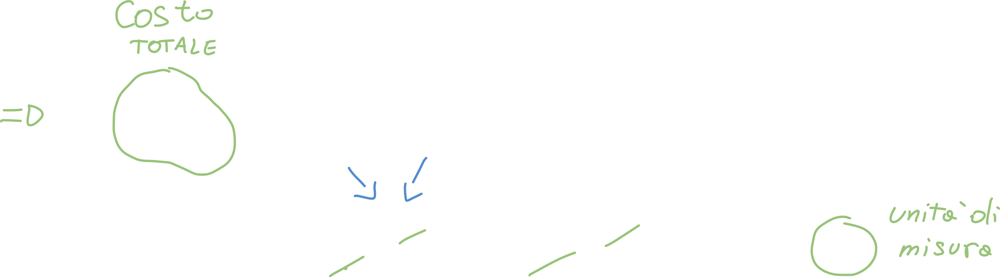
Costo UNITARIO di produzione
Per trovare il costo unitario di produzione ci basta dividere CTOT per la quantità di produzione Q:
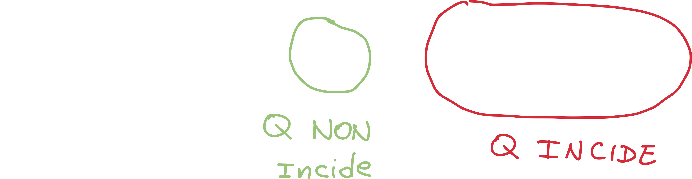
Vediamo come, andando a dividere per Q, questo non incida sul costo unitario (dei materiali), ma incida sugli ultimi due termini; questo perchè all'interno dei costi totali CT sono compresi i costi di set-up!
Questa equazione ci dice quindi che i costi totali CT, e quindi anche i costi di set-up possono diminuire solo aumentando il numero di prodotti Q! Allo stesso modo i costi fissi possono diminuire aumentando la quantità di prodotti.
Calcolare il tempo di set-up
Se consideriamo un processo multistadio, ovvero un processo in cui il prodotto subisce una serie di processi attraversando più stadi, possiamo dire che:
- Durante l'intervallo T vengono prodotti N elementi tutti uguali (lotto)
- La linea di produzione viene preparata solo una volta: i tempi di set-up sono indipendenti dal numero di prodotti N.
- Avendo più stazioni di lavoro, ognuna indicata con un indice i chiamiamo Tip il tempo di preparazione della stazione i-esima.
Possiamo quindi calcolare il tempo di set-up

I tempi di set-up sono tutti i tempi necessari alle operazioni di attrezzaggio della macchina, al fine di renderla pronta a produrre un determinato prodotto; appartengono ai tempi di set-up:
- Posizionamento del pezzo
- Cambio dell'utensile (ad esempio la punta di un trapano)
- Pulizia
- Cambio impostazioni
Calcolare il tempo totale di lavorazione
Possiamo trovare il tempo totale di lavorazione con una formula simile; ci basta moltiplicare la somma di tutti i tempo ciclo di stazione (il tempo che il prodotto passa in una stazione) per il numero totale di prodotti:
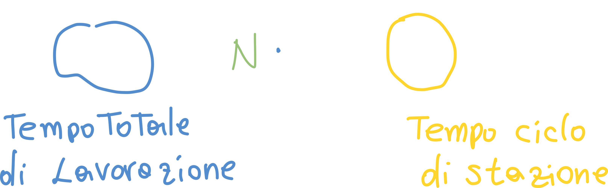
Calcolare il tempo di trasporto
In questo caso calcoliamo il tempo di trasporto tra ogni coppia di stazione, infatti gli indici i-1, i indicano proprio il tempo di trasporto dalla stazione i-1 a quella i.
Calcolare il tempo "perso" totale
Questo tempo comprende:
- Tempi di rielaborazione
- Tempi al prodotto da realizzare nuovamente (scarti)
- Tempo di trasporto
- Tempo di ciclo
- Tempo di preparazione
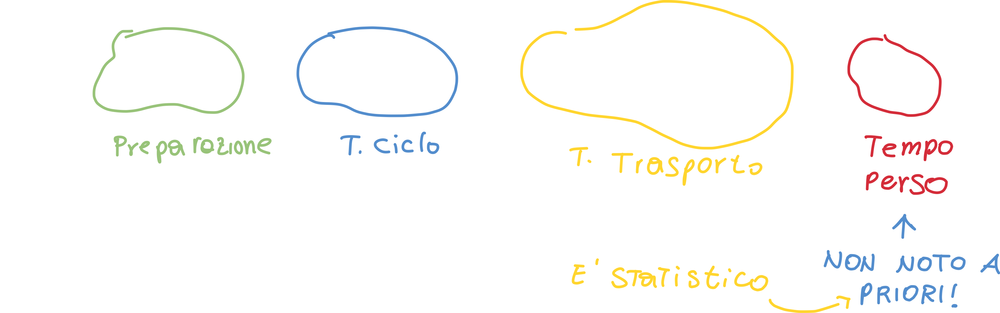
Ricavare l'equazione fondamentale dello studio dei tempi
Possiamo anche calcolare il tempo unitario andando a dividere il valore precedente per il numero di prodotti realizzati (del lotto):
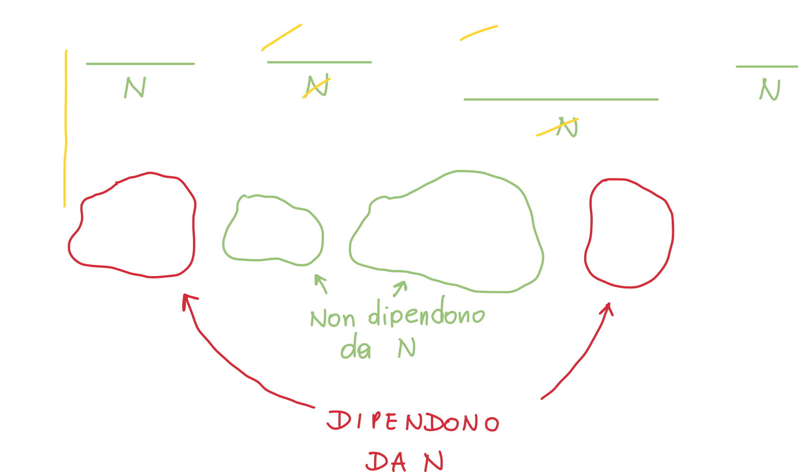
Contrariamente a come si potesse immaginare, il numero di prodotti non incidono sul tempo ciclo e sul tempo di trasporto: infatti tendiamo a pensare che quanti più prodotti dobbiamo trasportare, quanto più tempo impiegheremo; nulle di più falso!
I fattori che invece dipendono dal numero di prodotti (che ci potrebbe far diminuire il tempo di unitario) sono:
- Tempo di setup: se scende diminuisce il tempo unitario
- Tempo perso: se scende diminuisce il tempo unitario
Se però non possiamo modificare questi due tempi possiamo aumentare il numero di prodotti realizzati: notiamo che il numero di prodotti compare al denominatore, quindi quanto più grande è N, tanto meno questi due tempi incideranno sul tempo unitario.
Gradi di saturazione
Nelle operations vogliamo che il grado di saturazione sia il più alto possibile, perchè gli impiegati non devono avere "tempi morti".
Grado saturazione uomo
Per definizione, il tempo di set-up è a totale intervento umano, quindi definiamo grado di saturazione dell'uomo durante il ciclo il rapporto:
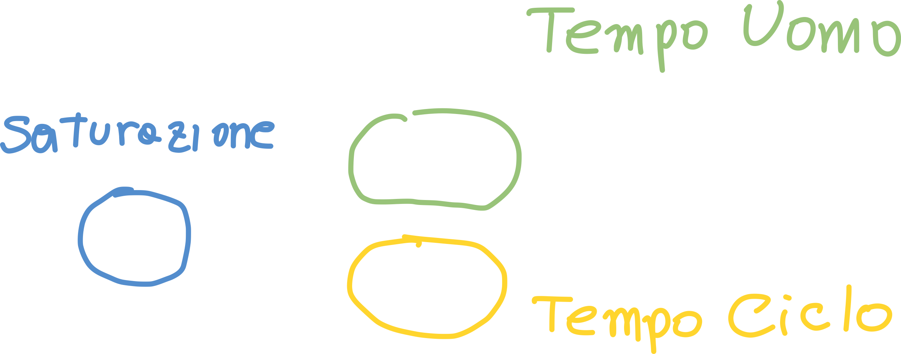
dove TU - tempo uomo è il tempo direttamente impiegato dal tecnico e TC - tempo ciclo è il tempo totale che la macchina impiega per realizzare un singolo prodotto.
Grado di saturazione macchina
Anche in questo caso è definita da un rapporto:
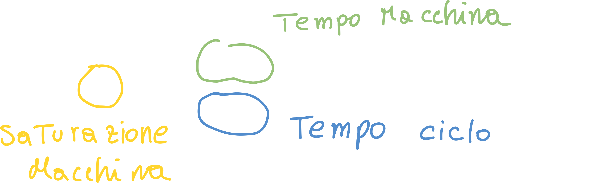
In questo caso TM - Tempo Macchina è il tempo impiegato dalla macchina per trattare un singolo pezzo, che è minore di TC, perchè TC ingloba anche altri tempi: spostamenti, set-up, carico/scarico, etc.
Metodi per la misuazione del lavoro
E' indispensabile per pianificare e controllare la produzione andare a misurare il lavoro, ovvero il dimensionamento del tempo necessario perchè un uomo svolga un insieme di operazioni.
Abbiamo due metodi per farlo:
- Metodo induttivo: studia il tempo a priori, basandosi su tabelle che forniscono i tempi di ciascuna fase
- Metodo deduttivo: si basa sulla rilevazione diretta dei dati, attraverso l'osservazione
Il metodo induttivo
Non conosciamo a priori il tempo, ma abbiamoa disposizione delle tabelle, dette Tabelle MTM - Method Time Measurement; queste tabelle hanno una stima di movimenti elementari (come ad esempio la flessione del gomito, afferare un oggetto, etc.) che possiamo usare per "comporre" un movimento composto (da, appunto, micromovimenti).
In altre parole: se abbiamo un movimento "reale" possiamo usare dei micromovimenti per comporre tutto il movimento, ed attraverso le tabelle stimiamo il tempo necessario.
Il tempo complessivo è dato dalla somma dei tempi elementari.
I limiti del metodo induttivo MTM
Abbiamo dei limiti ben specifici per questo metodo:
- Costo: ci vuole un tempo (e quindi costo) molto elevato per effettuare l'analisi dei movimenti.
- Non consideriamo i tempi passivi: se si effettua una misurazione in una determinata condizione non è detto che poi l'operaio mantenga la media in ogni altra condizione (ad esempio l'operaio si stanca).
Il metodo deduttivo
Successivamente al metodo induttivo, è subentrato il metodo deduttivo: questo metodo consiste nel dedurre il tempo necessario alle operazioni. Si prevede quindi di effettaure un cronometraggio centesimale (non divide un minuto in 60 secondi ma in 100 parti).
L'operazione da misurare viene suddivisa in fasi - blocchi facilmente riconoscibili (ad esempio avvitamento, segaggio, etc.)
A questo punto, per ogni elemento o fase:
- Effettuiamo un certo numero di rilevazioni
- Si calcola la media dei tempi rilevati e la dispersione (si calcola la media, dev standard e dispersione per assicurarci che i dati siano attendibili/affidabili)
Obbiettivo: individuare il tempo normale per il lavoro preso in considerazione, ovvero il tempo necessario ad un uomo in condizioni normali per compiere un determinato lavoro. Capiamo quindi che il tempo aleatorio non è attendibile perchè il lavoratore potrebbe essere, ad esempio, affetto da stanchezza.
Dobbiamo quindi associare ai tempi una valutazione del rendimento, ovvero una valutazione di quanto l'attività del lavoratore ha reso dato quel tempo; questa valutazione non è altro che una valutazione di velocità.
Questa valutazione viene espressa mediante un parametro V - velocità che tiene conto di un insieme di fattori (come ad esempio la stanchezza); i valori possono essere, mediamente:
- 100 - condizioni normali
- 80 - prestazioni pessime (operatore lento)
- 133 - prestazione ottima
Abbiamo uno step (ovvero incremento di valutazione) di 5 unità.
Equazione di normalizzazione - Trovare il tempo normale
Questa equazione ci dice che il prodotto tra il tempo e la velocità rimane sempre costante:
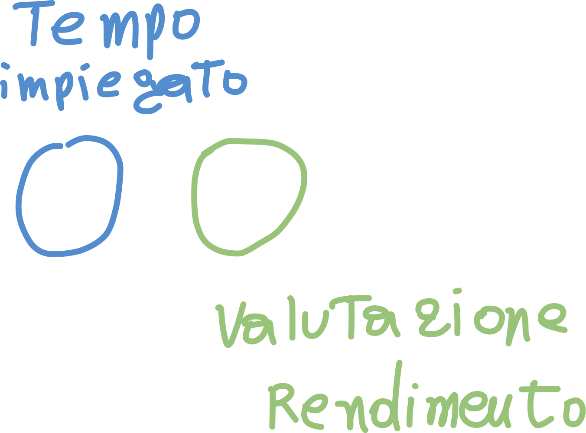
Quanto maggiore è il giudizio di velocità dell'operaio, tanto più piccolo sarà il tempo impiegato dall'operaio. Per visualizzare il concetto ci basta isolare il tempo:
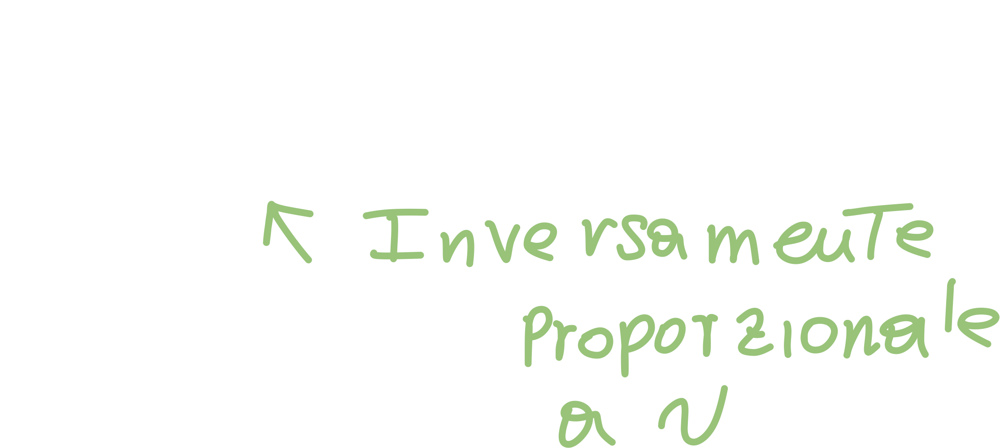
Possiamo quindi scrivere l'equazione di normalizzazione:
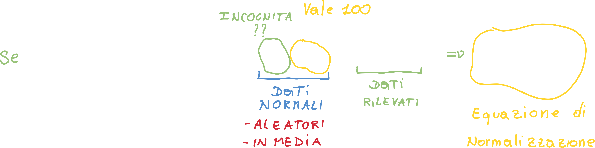
Siccome la velocità normale vale 100 (per regola) possiamo dividere il tutto per 100, e quindi essenzialmente:
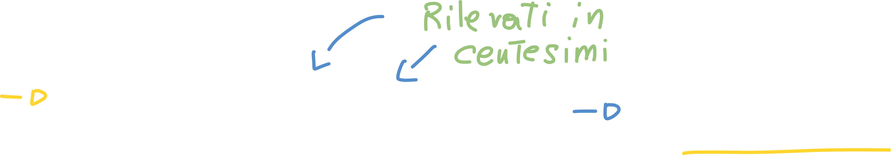
Possiamo quindi trovare il tempo normale per ciascuna fase, e la somma di tutti i TN fornisce il tempo normale TOTALE del lavoro, che però non corrisponde ancora al tempo effettivo del job.
Questo tempo deve essere maggiorato per una serie di motivi:
Bisogni fisiologici - BF
Per riposo - R
- sforzo fisico
- sforzo neuro-psichico
Aggiuntive o straordinarie - TAUS
- pulizia macchina
- microfermate
- rallentamenti
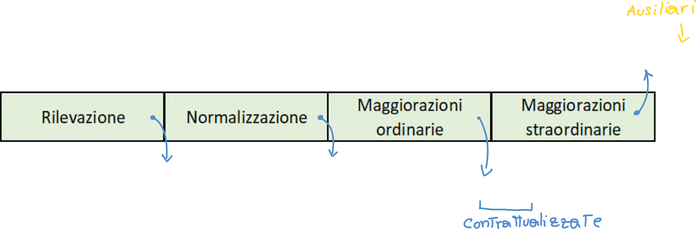
Abbinamento uomo-macchina
Si definisce abbinamento uomo-macchina il criterio che consente, in funzione dei tempi normali, l'abbinamento (ovvero la conduzione) di più di una macchina ad un operatore, in aggiunta a quella già inizialmente assegnatagli.
Assumiamo quindi che l'operatore possa lavorare sia quando la macchina è ferma, sia durante il funzionamento della macchina; questo perchè esistono delle operazioni periodiche (eseguite a macchina ferma) che richiedono un tempo.
Definiamo:
- MF - macchina ferma ovvero il tempo durante il quale l'operatore lavora con la macchina ferma. E' in questo tempo che rientra il tempo di set-up!
- TM - tempo macchina ovvero il tempo totale durante il quale la macchina processa il pezzo.
- ML - macchina lavora ovvero il tempo durante il quale operatore e macchina lavorano: la macchina richiede l'intervento dell'operatore (anche solo di osservazione); in questo tempo l'operatore non può fare altro.
- TAUS - tempo ausiliario ovvero azioni periodiche ricondotte al ciclo in esame
- BF - bisogni fisiologici ovvero il tempo per bisogni fisiologici
- TA - tempo attivo ovvero il tempo totale durante il quale l'operatore lavora sulla macchina oppure è impegnato in altri tempi
- TP - tempo passivo l'uomo non lavora e non deve nemmeno presidiare (osservare) la macchina.
- TC - tempo ciclo
Possiamo calcolare alcuni di questi valori con le formule:
Tempo attivo:
- TA = MF + ML + TAUS + BF
Bisogna notare che è incluso anche il tempo dei bisogni fisiologici; se così non fosse, questi tempi verrebbero utilizzati per l'abbinamento. Qusto però è contro le regole dell'abbinamento, che prevede di abbinare una seconda macchina solo nei tempi in cui l'operatore non fa nulla (andare in bagno è un'attivita!).
Tempo passivo
- TP = TM - ML
Tempo ciclo
Il tempo di ciclo sarà ovviamente la somma dei precedenti:
- TC = TA + Tp = MF + TM + TAUS - ML
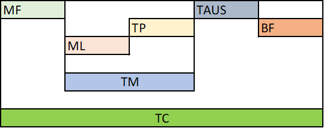
Possiamo quindi Osservare quindi questo diagramma che ci mostra il susseguirsi dei vari tempi:
Inizialmente la macchina è ferma, deve essere quindi preparata (set-up)
Successivamente quando la macchina parte, inizia il tempo macchina; allo stesso tempo inizia anche il tempo in cui l'operatore è occupato sulla macchina (ML)
- Se l'operatore termina ciò che doveva fare prima che finisca il tempo macchina, inizia il tempo passivo TP, in cui l'operatore non fa nulla.
Quando finisce il tempo macchina iniziano i tempi ausiliari e tempi fisiologici.
- Finchè non termina il tempo macchina, l'operatore non potrebbe andare in bagno e/o iniziare le operazioni di pulizia: non è impegnato in nulla.
Come abbinare una nova macchina?
Per abbinare una nuova macchina il tempo ciclo totale della seconda macchina non può essere superiore al tempo passivo dell'operatore.
Il numero di macchine abbinabili sarà dato quindi dalla formula:
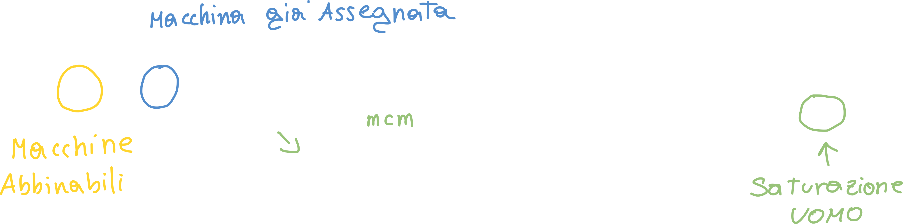
Dove TA' = TA + Tempo di trasferimento
Sviluppando la somma ci accorgiamo che il numero di macchine abbinabili è proprio uguale all'inverso della saturazione uomo calcolata precedentemente.
Caso del sovradimensionamento
Lezione 2020 11 10
Nel caso in cui abbiamo un alto grado di automazione TM possiamo affidare più macchine allo stesso operatore, ma solo a patto che le macchine siano disposte in maniera tale da permettere tempi di spostamento contenuti.
Cosa accade se il numero di macchine da assegnare è, ad esempio, 2,3? Se abbiniamo all'operatore 3 macchine, le prime due sono "piene" mentre nella terza macchina ci sarà un eccesso di tempo ciclo rispetto al tempo passivo (perchè la terza macchina finisce dopo che la seconda abbia terminato N.d.S.); questo valore corrisponde all'aliquota di arrotondamento, ovvero 3-2,3 = 0,7.
Il tempo della terza macchina è più grande del tempo passivo dell'insieme della prima e della seconda del 70%; in altre parole, questo vuol dire che quando la seconda macchina avrà terminato la lavorazione, il ciclo della seconda macchina sarà terminato, ma l'operatore è ancora impegnato sulla terza; di conseguenza la prima e la seconda macchina si fermano in attesa di un intervento dell'operatore.
Nel caso del sovradimensionamento l'arrotondamento è proprio pari all'eccesso del tempo ciclo rispetto alla somma dei tempi passivi delle due macchine.
Di conseguenza, le macchine precedenti all'ultima si fermeranno in attesa dell'operatore.
Caso del sottodimensionamento
In questo caso, se scegliamo 2 macchine invece di 3, (arrotondiamo per difetto) avremo che il tempo ciclo della macchina 2 sarà minore rispetto al tempo passivo della prima (la seconda macchina "ci va larga" N.d.S.), di conseguenza l'operatore avrà del tempo passivo inutilizzato.
Questo tempo passivo inutilizzato sarà pari proprio all'arrotondamento per difetto: tempo inutilizzato = 2,3 - 2 = 0,3; di conseguenza il 30% del tempo passivo iniziale resta inutilizzato (il 30% è pur sempre meglio del 100!).